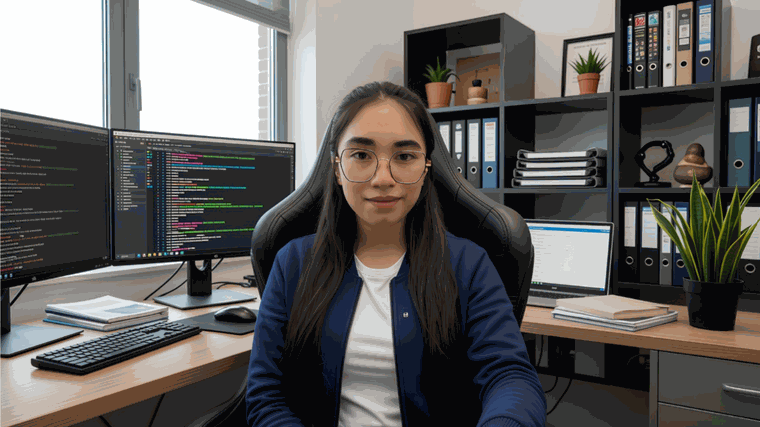

¿Quién soy?
María José
Me caracterizo por la paciencia, la autonomía y la firmeza de criterio: mantengo la calma en proyectos exigentes y defiendo mis ideas con argumentos, sin dejar de escuchar otras perspectivas. Disfruto el trabajo en equipo y siempre estoy dispuesta a ayudar.